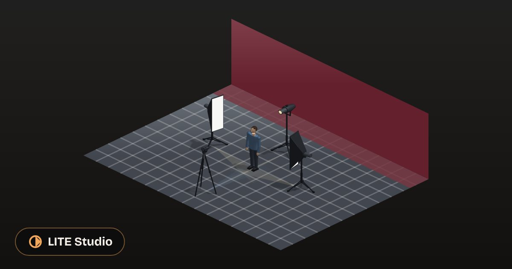
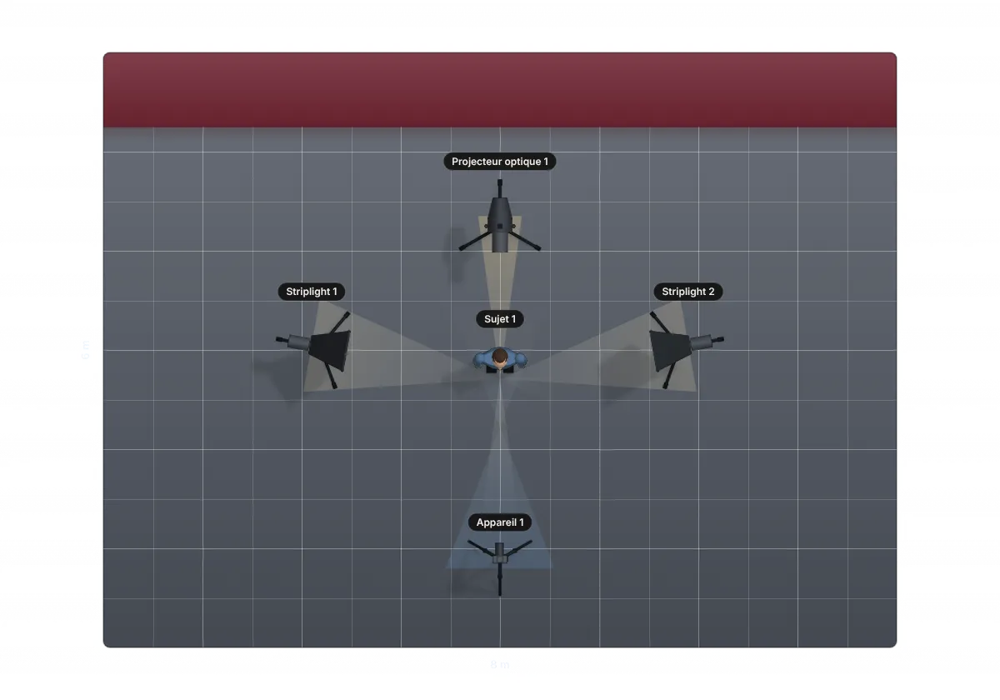

Érotique silhouette bordeaux
Deux strips de contour et fond bordeaux pour lignes plus denses.
- 5 éléments
- Érotique
- Studio 8 × 6 m


Matériel 4
Capture
- 1 ×Appareil Trépied haut70 x 86 cm
Lumières
- 2 ×Striplight 40 x 140
- 1 ×Projecteur optique 36°45 x 50 cm
Ouvrez le preset pour déplacer le matériel, mesurer les distances et imprimer la feuille de plateau.